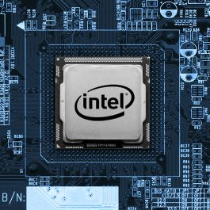
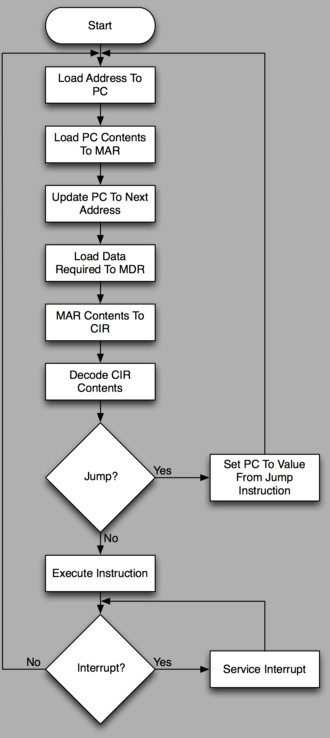

Processors do different things inside of one IC (Integrated Circuit) chip.
The core of a processor does what is called a "Machine Cycle". A machine cycle uses two elements of the process core, the Control Unit and the Arithmatic Logic Unit (ALU).
The Control Unit fetches instructions from the Memory Interface with the Instruction Fetcher, decodes what instructions need to be modified with the Instruction Decoder, temporarily stores the data using Registers, hands any data that needs to be modified to the ALU which applies the changes and moves the results either back to the Registers for more processing or back out into the system memory.
This system processor cycle is known either as the "Instruction Cycle" or the "Machine Cycle" depending on what you read, and is often illustrated in Computer Science books using a diagram like the following:

The ALU does math using circuits called "full adders" and "two's compliment".
The full adder circuit adds binary numbers and carries the remainder off to the next adder with a series of boolean logic gates.
See Digital Logic to learn about binary gates and boolean algebra.

Different methods for doing the instruction set exist. Collectively these methods are known as "Instruction Set Architecture" (ISA). The different hardware methods used to perform the ISA, is known as the Micro Processor Architecture, more commonly referred to as the "Microarchitecture".
Often times different hardware Microarchitecture will use a different instruction set, but not always, the two are separtate things. An AMD processor performs the same x86 instructions as an Intel processor but uses a different Microarchitecture to perform the same instructions.
Traditionally, a different ISA means your programs will not be compatible, but different Microarchitecture using the same ISA can use the same programs. I say traditionally because there now exists cross platform code, created to run in a virtual machine, that might be able to run unaltered between different ISAs, but still, a different virtual machine is needed per ISA.ISAs usually run in two varieties, CISC and RISC. CISC = Complex Instruction Set Computer. RISC = Reduced Instruction Set Computer. Other types exist, but are uncommon. They include very long instruction word (VLIW) architectures, and the closely related long instruction word (LIW) and explicitly parallel instruction computing (EPIC) architectures. Architectures with even less complexity have been studied, such as the minimal instruction set computer (MISC) and one instruction set computer (OISC).
The Operating Systems also needs to be created under one of these instruction sets. Windows OS commonly runs under CISC x86, whereas different versions of Linux exist that run under both CISC and RISC such as x86 and ARM (Advanced RISC Machine) Architecture.
As different as CISC and RISC are, they both follow the template for all modern computers, known as the Von Neumann architecture, detailed in a 1945 paper by John von Neumann.